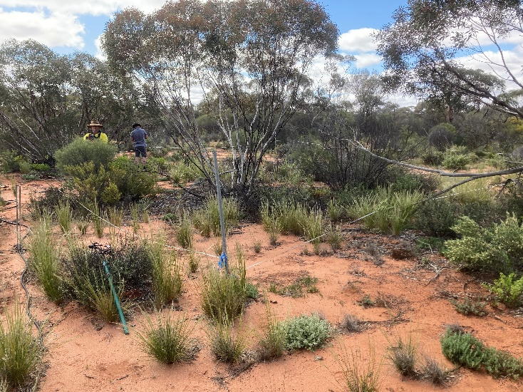
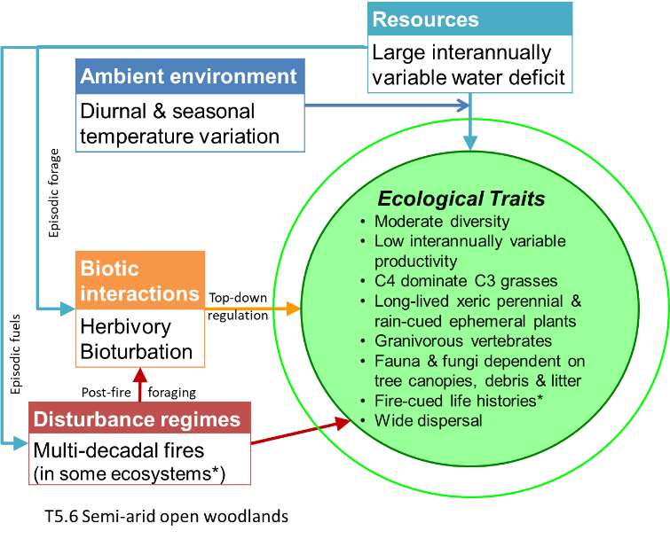
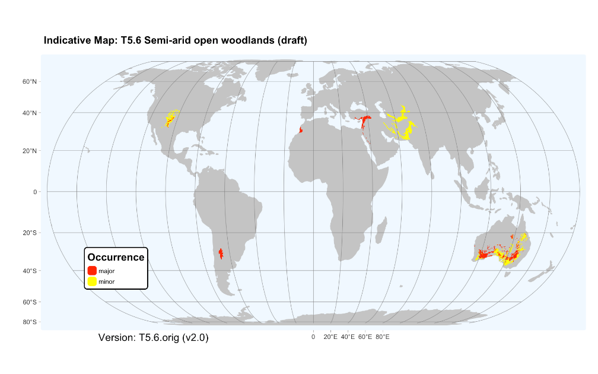

Describe T5.6 Semi-arid woodlands
Revision summary: Describe T5.6 Semi-arid woodlands
Origin: Australian NEAP project.
Justification: Revision resolves conflated variation along two independent environmentl gradient within the current formulation of T4.4: aridity and temperature related to
Current status: Proposal considered by GET-SC on 8 Sep 2025, drafft update in preparation.
T5.6 Semi-arid open woodlands

Ecosystem properties: These ecosystems include a sparse to open layer of low trees commonly 3-10 m tall, with an open cover of shrubs and highly variable and ephemeral ground vegetation of grasses and forbs. They differ from T4.4 Subhumid temperate woodlands in having sparser vegetation with lower stature, lower and more interannually variable productivity, and greater representation of xeric traits and opportunist life cycles in both plants and animals. Trees and long-lived shrubs are evergreen stress-tolerators with slow growth rates, low or intermittent fecundity, deep and laterally extensive root systems, and nanophyll-microphyll leaves with low SLA, sunken diurnally regulated stomates, thick cuticles, hairs, heat-reflective coloration and vertical orientation. They structure habitats of vertebrates and invertebrates dependent on tree canopies, woody debris and leaf litter. Many grasses, forbs and some shrubs have short-lived standing plant phases and long-lived soil seed banks cued by substantial rainfall events and, in some cases, seasonal dormancy to avoid desiccating summers. Grasses may include species with either C3 or C4 photosynthetic pathways, but C4 is typically dominant. Most mammals are nocturnal, sheltering below ground or under shade trees during hot days. They include fossorial species that contribute to soil turnover and nutrient cycling, species with physiological and behavioural water conservation traits, as well as small mammals whose populations fluctuate with interannual rainfall variation. Granivory is conspicuous among birds and small mammals, while herbivores with medium body sizes may influence vegetation structure and composition, particularly recruitment of long-lived woody plants. Some semi-arid woodlands are fire-prone and include species with fire-cued life histories.

Ecological drivers: These open ecosystems are transitional on a water balance gradient between deserts and grassy ecosystems. They experience a substantial, interannually variable water deficit, peaking with evapotranspiration in hot summers. Mean annual rainfall is 200–500 mm, weakly seasonal. Temperatures may fall below zero in winter. Soils may be fine-textured or sandy, red or pale, with moderate to low fertility and reliably moist only at depth. While some ecosystems within this group are not fire-prone, others experience canopy fires at multi-decadal intervals, driven largely by ephemeral fuels after wet periods.
Distribution: Semi-arid regions of southern Australia, South America, western and eastern North America, the Mediterranean region, and Eurasia.

References:
Keith DA, Simpson CC, Tozer MG (2020) Mallee and maarlok ecosystems of southern Australia. In: ‘Encyclopedia of the world’s biomes’ (Eds. MI Goldstein, DA DellaSala), pp869-879. Elsevier, Amsterdam.
Muldavin E, Triepke FJ (2020) North American pinyon–juniper woodlands: Ecological composition, dynamics and future trends. In: ‘Encyclopedia of the world’s biomes’ (Eds. MI Goldstein, DA DellaSala ), pp 516-531. Elsevier, Amsterdam.
Oyarzabal M, Clavijo J, Oakley Let al. (2018). Vegetation units of Argentina [dataset]. Southern Ecology 28, 40–63.
White F (1983) The vegetation of Africa. A descriptive memoir to accompany the vegetation map of Africa. UNESCO, Geneva.